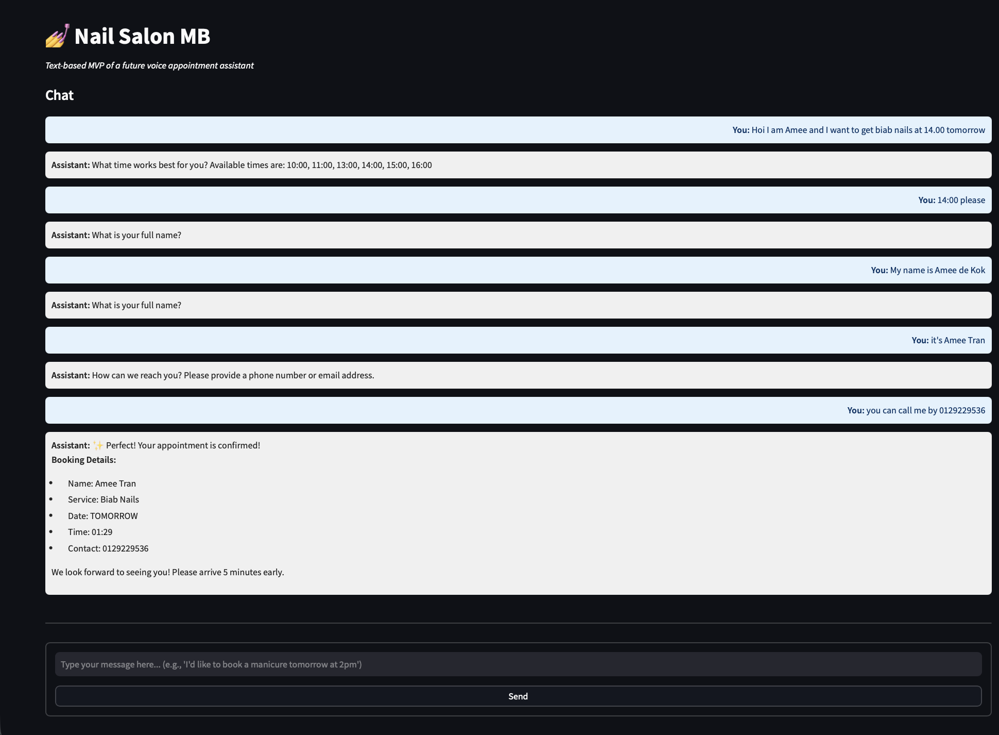

MSc Artificial Intelligence at Vrije Universiteit Amsterdam. I take LLMs out of the demo stage — local inference, structured extraction, graceful fallbacks, and evaluation harnesses that say how well it actually works.
A local Llama 3.1 model turns messy chat messages into validated bookings — with a rule-based fallback that never leaves a customer without an answer.
A voice-capable recipe agent where a neural intent layer hands off to Prolog — so ingredient logic is explainable instead of hallucinated.
At 2Contact: scraped forum threads, classified satisfaction with OpenAI models, and put the whole ETL on GitHub Actions so the weekly report wrote itself.
I studied AI at VU Amsterdam because I wanted to understand systems end to end — the model, the data around it, and the person on the other side of the screen.
Two years as a teaching assistant taught me to explain hard things simply, and to notice where people actually get stuck. That shows up in how I build: clear failure modes, honest evaluation, no magic.
During my internship at 2Contact I sat between the sales department and the data — turning vague questions into metrics, then into automated pipelines other people could rely on.
Now I'm in the Deepening AI track of my master's, spending most of my time on LLM systems: extraction, agents, retrieval, and how to prove they work.
A text-based booking agent that reads a sentence like "hi, can I get a mani tomorrow at 2?" and turns it into a validated, stored appointment — running a quantised Llama 3.1 entirely on the local machine, with a regex layer underneath that always succeeds.

Small salons lose bookings to the phone. Customers write in free text, out of order, and half the time they leave out the one field you need — so a form-shaped chatbot just interrogates them until they give up.
The interesting constraint was privacy and cost: no customer message should leave the machine, and no per-token bill. That ruled out hosted APIs and pushed the whole system onto local quantised inference — which in turn made robustness the real design problem, because a Q2_K model will sometimes hand you broken JSON.
Free-text chat turn arrives with the conversation state so far.
Local Llama is prompted for strict JSON: service, date, time, name, contact — validated by Pydantic.
If the JSON is invalid, regex patterns take over — aliases ("mani" → manicure), dates, times, emails, phones. Always returns something.
Service checked against the menu, slot checked against the calendar, missing fields turned into one polite follow-up question at a time.
Appointment written to SQLite, confirmation rendered, state reset for the next customer.
The model is allowed to fail. Every extraction records its source (llm or rule) and a confidence score, so failures are visible in the logs instead of silently degrading the conversation.
New fields are merged into a plain dict, so a half-finished booking survives a bad turn and the assistant only ever asks for what's genuinely missing.
A taken slot returns the remaining times for that date; a full day asks for another. The booking flow never dead-ends.
A 39-case harness scores intent and service accuracy per run and writes a results CSV, so a prompt change can be judged instead of argued about.
It's an MVP and says so: no Twilio, no calendar sync, no accounts or payments, single language. The Q2_K quantisation trades quality for speed and still trips on ambiguous phrasing.
The path to production I'd take next: few-shot examples and a higher-quality quantisation for extraction, Google Calendar for real availability, then Twilio for inbound calls and SMS confirmations.
A recipe assistant you can talk to. Dialogflow CX handles intent and dialogue; a Prolog knowledge base answers the questions that need to be right — what can I substitute, what's still missing, does this fit what's in my kitchen.
Cooking is the worst possible time to use a screen. Your hands are busy, the question is specific, and a wrong answer ruins dinner.
A pure language model is fluent about recipes and unreliable about facts. So the language layer only decides what was asked — the answer itself comes from rules that can be inspected and corrected.
Voice input is transcribed so the user never has to touch the phone mid-recipe.
Dialogflow CX classifies the request and pulls out dishes, ingredients and constraints, keeping context across turns.
Recipe rules match ingredients on hand, find substitutions and rank what's actually cookable tonight.
The rule result is filled into the dialogue response — grounded, short, and traceable back to a fact.
Language models are good at understanding, symbolic layers are good at being right. Most useful assistants need both, with a clean interface between them.
Anything longer than two sentences is unlistenable. Designing for speech forced answers to be short and unambiguous — which made the text version better too.
When behaviour is wrong, you can point at the clause. That debuggability is why I reach for hybrid designs on anything domain-specific.
Six months at 2Contact turning an open question from the sales department — "what are customers actually unhappy about?" — into an automated weekly report nobody had to assemble by hand.
The business had thousands of public forum posts about its service and no way to read them. The question arrived unscoped, so the first job was turning it into something measurable.
I worked with my supervisor to agree what "satisfaction" would mean in numbers and which problem categories mattered to the sales team, before writing a line of pipeline code.
Python scripts collect customer feedback threads from the KPN community forum.
OpenAI models infer satisfaction and tag recurring customer-service problems against the agreed categories.
GitHub Actions runs the ETL on a schedule — the manual data-processing step disappeared.
A weekly dashboard and satisfaction report land with concrete suggestions for the next period.
The hardest part wasn't classification — it was agreeing with stakeholders on what counted as a satisfied customer.
Putting the ETL in CI is what turned a slide deck into a standing part of how the team reviews its week.
Sales didn't want distributions; they wanted two things to fix. Every report ended with recommendations, not charts.